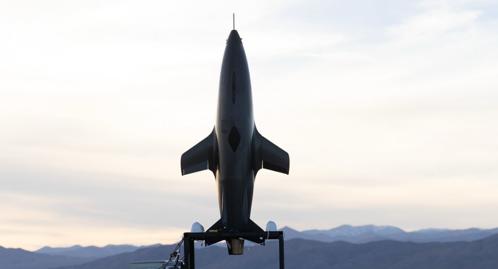

Mach Industries Guidance, Navigation, and Control (GNC) Internship
05/2024 – 08/2024 · Industry
Contributors
JB Rajsky (Manager), Mach GNC Team
Overview
Mach Industries aims to provide cheaper, low-cost military drones for the US government and other partners. While there, I worked on control law design and analysis for the Viper drone (seen on the right), system identification for its actuators, and guidance laws to handle loitering operations.
Results
- Performed 6DOF analysis to characterize aerodynamic forces and moments on a drone during vertical takeoff.
- Tested four types of PID controllers on a simulation of a thrust vector control system to evaluate performance.
- Built and programmed an Arduino avionics setup in C++ to perform frequency response testing for system identification of control surface actuators.
- Simulated and wrote flight software for a trajectory guidance law of our drone in Python and Rust.

Viper (Credit: Mach Industries)